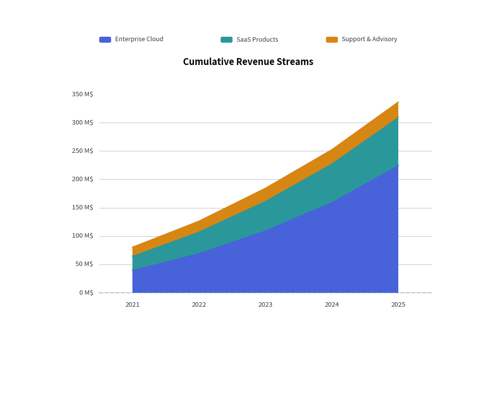
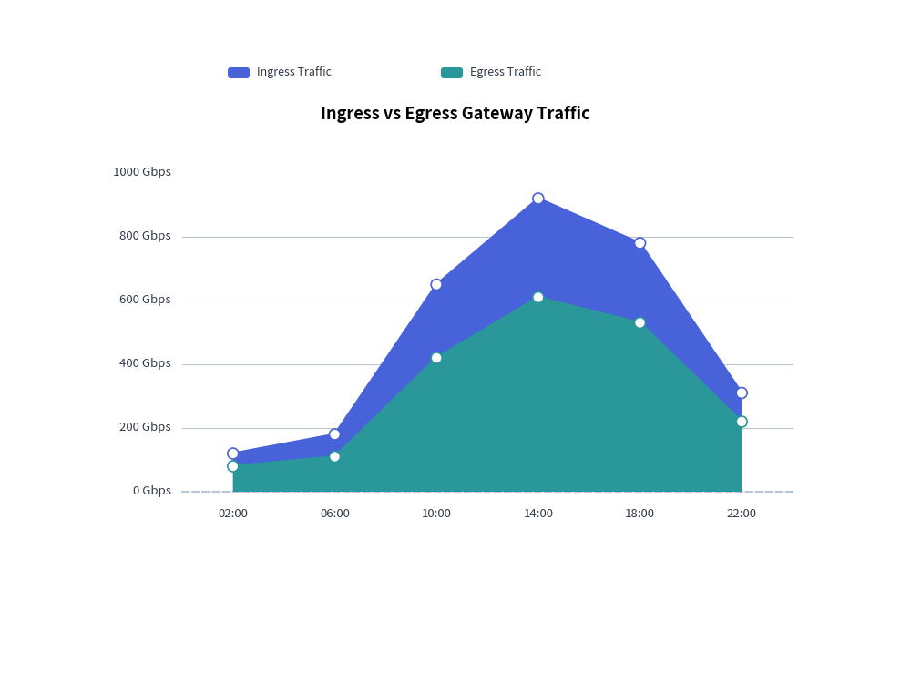

AreaChart: Overlapping & Stacked Quantitative Volumes
AreaChart visualizes cumulative volumes, capacity distributions, and continuous trends over categorical intervals or time periods. By filling the geometric area between data series contours and the baseline ($Y=0$), it highlights both the total volume and individual series contributions.
1. Overview & Key Modes
Area charts support two core operational modes:
mode="overlap": Each series polygon starts at the baseline ($Y=0$) and overlaps with preceding series. Use a semi-transparent opacity (fill_alpha=0.3to0.5) to make underlying curves visible.mode="stack": Each series rests directly on top of the preceding one, showing cumulative totals (e.g., total gross revenue broken down by product line).
mode="overlap" (Semi-transparent) mode="stack" (Cumulative Total)
Y ▲ Y ▲
│ ▲ │ ▲ Total
│ ╱ █╲ ▲ │ ╱█╲
│ ▲╱ █ ╲ ╱ ╲ │ ▲╱███╲ Series B
│ ╱ █ █ ╲╱ ╲ │ ╱██████╲ Series A
└───┴──┴──┴───┴────┴──► X └────┴────────┴────► X
2. Constructor & Configuration
from drawlib.charts.area import AreaChart
from drawlib.styles import Styles
chart = AreaChart(
axis_line_style=Styles.MutedDashed,
categories=["2021", "2022", "2023", "2024", "2025"],
axis_text_style=Styles.Muted.patch(text_size=9.5),
grid_style=Styles.MutedLight,
width=80.0,
height=55.0,
title="Cumulative Revenue Streams",
title_style=Styles.BlackBold.patch(text_size=13.0),
mode="stack", # "stack" or "overlap"
fill_alpha=0.65, # Polygon fill opacity (0.0 to 1.0)
smooth=False, # Smooth spline curve or straight lines
show_points=False, # Draw vertex markers
)
3. Cumulative Stacked Area Chart
Stacked area charts are ideal for displaying total aggregate metrics and showing the proportional contribution of each stream over time.

4. Overlapping Area Chart with Custom Markers
When comparing independent metrics that share the same scale (such as network ingress and egress traffic), use mode="overlap" with a lighter alpha and vertex markers:
